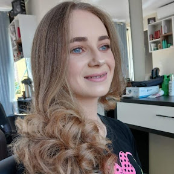

Nome do Aluno
Estudante do Curso Técnico em Desenvolvimento de Sistemas
Informações Pessoais
Idade: 15 anos
Cidade: Manoel Ribas - PR
Email: rafaela.willemann@escola.pr.gov.br
Telefone: (00) 00000-0000
Objetivo
Eu busco me formar no curso de Densenvolvimento de Sistema, fazer faculdade de enfermagem, me aperfeiçoar cada vez mais na minha profissão, ser bem sucedida,e semprebuscar mais conhecimentos.
Formação
Curso: Técnico em Desenvolvimento de Sistemas
Instituição: Colegio Estadual Professora Reni Correia Gamper
Ano: 1º ano
Conhecimentos
- HTML básico
- CSS básico
- Lógica de programação
- Informática básica
Habilidades
- Trabalho em equipe
- Responsabilidade
- Organização
- dedicada
- Empatia
Projetos
Meu primeiro site
Projeto desenvolvido em sala utilizando HTML e CSS para praticar a criação de páginas web.
Projeto de Robótica
Participação em atividade prática envolvendo programação, sensores ou montagem de circuitos.